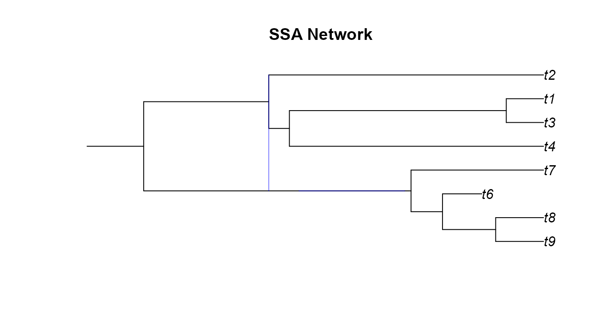
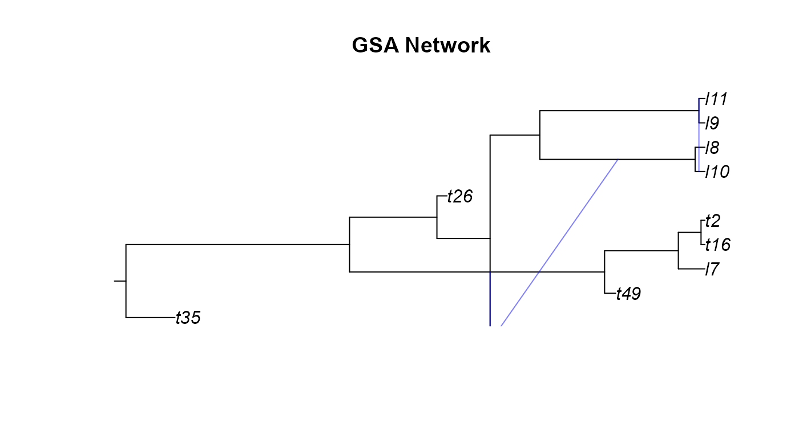
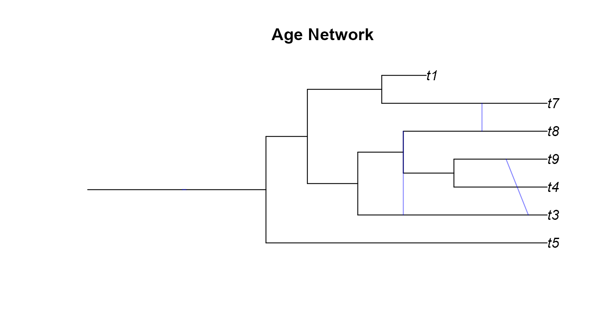
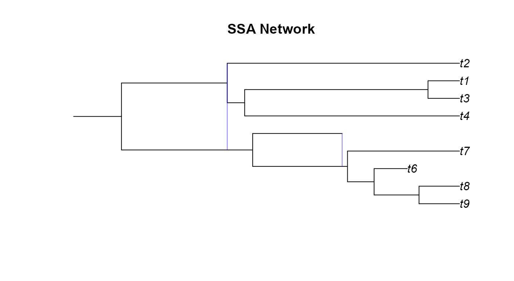
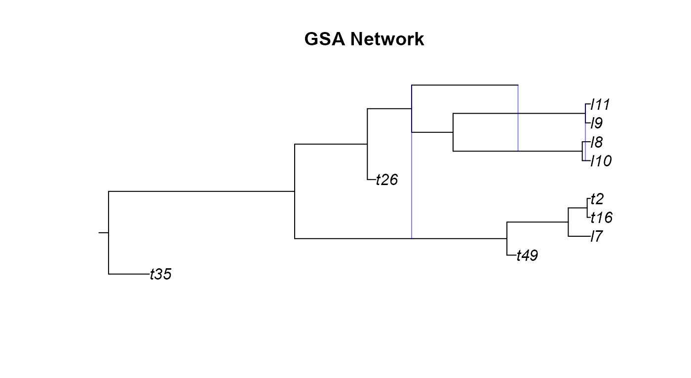
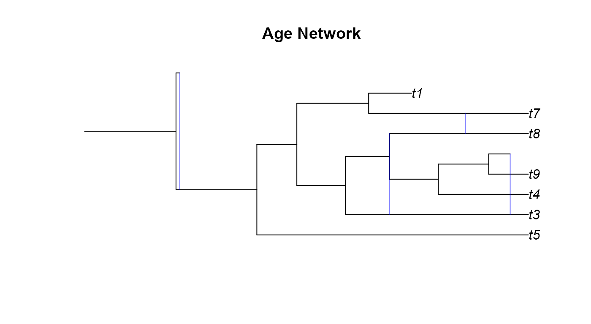
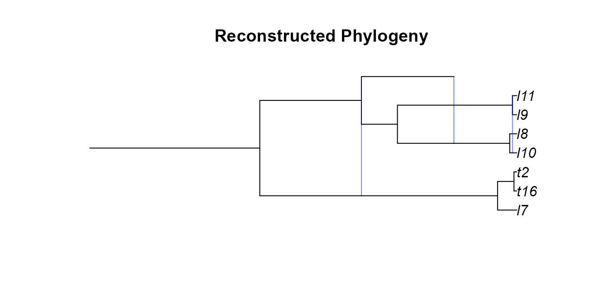
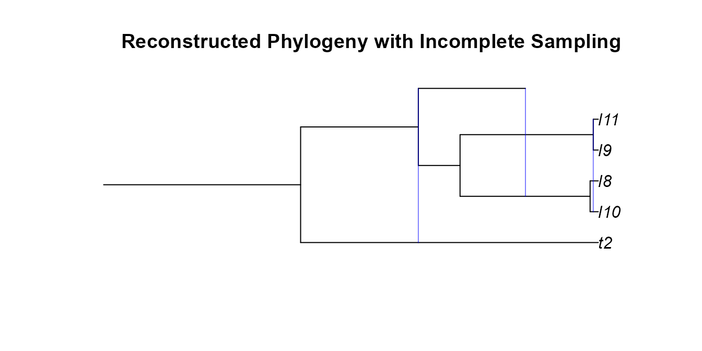

Introduction
An R Package for Simulating Phylogenetic Networks
Josh Justison
introduction.RmdOverview
The SiPhyNetwork R package is a tool for simulating phylogenetic networks under birth-death-hybridization based models. It provides functions for creating complex hybridization models, functions for simulating phylogenies under these models, as well as utility functions for characterizing the types of phylogenetic networks, visualizing networks, and saving phylogenetic networks in the Extended Newick format. This allows users to simulate phylogenetic networks under a suite of more biologically realistic models. The SiPhyNetwork package is released under the GPL-3 license and can be downloaded from CRAN or the source code is avaliable on GitHub
Introduction
Birth-death processes are commonly used to describe species diversification (Nee 2006). There exist several phylogenetic simulation tools that generate trees under the birth-death process (See Stadler 2011) as well as extensions for density-dependent diversification , time-dependent rates (Höhna 2013; Höhna, May, and Moore 2015), lineage age dependent rates (Hagen and Stadler 2018), and fossilization (Barido-Sottani et al. 2019).
Gene flow and hybridization is found throughout the tree of life and has had a nontrivial role in shaping diversity (Mallet, Besansky, and Hahn 2016). Recently, an extension of the birth-death process that includes hybridization was developed as a prior for Bayesian phylogenetic inference (Zhang et al. 2018). This model assumes the waiting time between hybridizations is exponentially distributed with rate parameter \({ntaxa \choose 2}\nu\), where \(\nu\) is the hybridization rate. A few tools exist that simulate phylogenetic networks under variants of this model (Morin and Moret 2006; Woodhams, Lockhart, and Holland 2016; Davín et al. 2020), however they all have different conceptualizations on how hybridization events affect the number of lineages on the phylogeny. As process-based phylogenetic inference methods receive increased attention, it becomes imperative that we can simulate biologically relevant phylogenetic network for the testing of these methods and for creating hypotheses about empirical systems.
The SiPhyNetwork Package
The SiPhyNetwork R package allows simulation of phylogenetic networks under a birth-death-hybridization process. This package extends the capabilities of other existing birth-death-hybridization based simulators by allowing:
- Simulating to a fixed time or fixed number of species
- Incomplete sampling sampling
- Sampling of extinct taxa
- Hybridization events to be either a lineage generating, a lineage
neutral, or a lineage degenerative process.
- Successful hybridization events to be an arbitrary function of genetic distance
- Successful hybridization events to be dependent on a trait that evolves along the network
- Functions for visualizing, writing, and reading phylogenetic networks in R
Throughout this vignette we will cover how to use these features in SiPhyNetwork.
Simulating Networks
There are three core functions for simulating phylogenetic networks:
sim.bdh.age, sim.bdh.taxa.ssa, and
sim.bdh.taxa.gsa (collectively referred to as
sim.bdh style functions). These functions all use the same
birth-death-hybridization models but differ in their stopping
conditions.
- The
sim.bdh.agefunction simulates until a specifiedage. - The
sim.bdh.taxa.ssafunction uses the Simple Sampling Approach (SSA) to simulate to a specified number of taxan, that is, the simulation will stop once the phylogeny hasntips. - The
sim.bdh.taxa.gsafunction uses the General Sampling Approach (GSA) to simulate to a specified number of taxan. Briefly, the GSA simulatesmtaxa under the SSA and samples the phylogeny from time periods wherentaxa are present.
Both the SSA and GSA are described with greater detail in Hartmann, Wong, and Stadler (2010) and Stadler (2011).
Example 1: Simulating Networks Under A Simple Hybridization Model
The sim.bdh style functions have many optional arguments
with default values. For this first set of simulations we won’t adjust
any optional arguments, we’ll be playing with these arguments in later
sections. However, it is important to know the assumptions we are making
with our model by using default parameters. Specifically, we assume:
-
frac = 1andstochsampling = FALSEassumes that all extant taxa are sampled in the phylogeny. -
twolineages=FALSEmeans that we start with a one lineage rather than two lineages that share a common ancestor -
complete = TRUEleaves extinct species on the phylogeny. -
hyb.rate.fxn = NULLassumes that successful hybridization events are not a function of the genetic distance between taxa. -
trait.model = NULLassumes that successful hybridization events do not depend on a trait value between taxa.
The arguments we will be using are:
-
age,m, andn: These parameters are used for the stopping condition of the simulations. -
numbsim: The number of simulations performed -
lambda: The speciation rate -
muThe extinction rate -
nuThe hybridization rate -
hybprops: A vector of length three that denotes the proportion of hybridizations that are lineage generative, lineage degenerative, and lineage neutral. -
hyb.inher.fxn: This is a function used for determining the inheritance proportions.
Now we can try running some simulations
library(ape)
library(SiPhyNetwork)
set.seed(82589933) ##set the seed for reproducibility. This is the exponent of the largest known Mersenne prime number
##First we need a function that describes how inheritance probabilities are drawn
inheritance.fxn <- make.beta.draw(10,10)
##We can see that this function makes draws from a beta(10,10) distribution
inheritance.fxn()
#> [1] 0.4893861
inheritance.fxn()
#> [1] 0.4677096
##We also want to set the proportion of each type of hybrid event
hybrid_proportions <-c(0.5, ##Lineage Generative
0.25, ##Lineage Degenerative
0.25) ##Lineage Neutral
##We can simulate to 7 extant tips with the SSA
ssa_nets<-sim.bdh.taxa.ssa(n=7,numbsim=20,
lambda=1,mu=0.2,
nu=0.20, hybprops = hybrid_proportions,
hyb.inher.fxn = inheritance.fxn)
ssa_net<-ssa_nets[[20]] ##The sim.bdh functions return a list of length numbsim. We get the 20th simulation
print(ssa_net)
#>
#> Evolutionary network with 2 reticulations
#>
#> --- Base tree ---
#> Phylogenetic tree with 8 tips and 12 internal nodes.
#>
#> Tip labels:
#> t2, t4, t7, t6, t9, t8, ...
#>
#> Rooted; includes branch lengths.
##We can also simulate 7 extant taxa with the GSA.
##We choose m=30 because it becomes very unlikely that at 30 tips we will ever return to 7
gsa_nets<-sim.bdh.taxa.gsa(m=30,n=7,numbsim=20,
lambda=1,mu=0.6,
nu=0.3, hybprops = hybrid_proportions,
hyb.inher.fxn = inheritance.fxn)
gsa_net<-gsa_nets[[19]]
##Simulate a network up to age 2
age_nets <-sim.bdh.age(age=2,numbsim=20,
lambda=1,mu=0.2,
nu=0.25, hybprops = hybrid_proportions,
hyb.inher.fxn = inheritance.fxn)
age_net<-age_nets[[8]]There are a few things worth noting here. Firstly, if we looked at
age_nets we would notice that some of the elements are
0, the sim.bdh style functions return
0 if the phylogeny goes extinct before reaching the
stopping condition.
Secondly, we can see that each phylogeny is an evonet
object, however, they have an additional attribute
inheritance. inheritance contains a vector of
inheritance probabilities. The \(i^{th}\) element in
inheritance corresponds to the inheritance probability of
the hybrid edge denoted in the \(i^{th}\) row of the
reticulation attribute.
age_net$inheritance ##This corresponds to the edges found in reticulation
#> [1] 0.3674308 0.3716242 0.4939105 0.5539802
age_net$reticulation
#> from to
#> [1,] 9 10
#> [2,] 15 18
#> [3,] 17 21
#> [4,] 22 20Further, we can use the gsa.network() function to sample
phylogenies under the GSA. This allows us to properly sample \(n\) taxa from any phylogenetic model,
regardless if the phylogenetic networks were generated from the
SiPhyNetwork package or not.
##We can simulate to 30 extant tips under the SSA. In this case the 30 acts as the m parameter of the GSA
ssa_nets<-sim.bdh.taxa.ssa(n=30,numbsim=10,
lambda=1,mu=0.2,
nu=0.20, hybprops = hybrid_proportions,
hyb.inher.fxn = inheritance.fxn)
my_net<-ssa_nets[[1]]
my_net<-network.gsa(net=my_net,ntaxa=5,complete=T,frac=1,stochsampling=F)Lastly, Most of the arguments in the sim.bdh type
functions take either a numeric or boolean, however,
hyb.inher.fxn, hyb.rate.fxn take functions as
arguments while trait.model takes a list of functions as an
argument. These take functions as arguments so the user can define
functions as they please to model the specific biology of interest. Some
utility functions exist to aid in creating functions that fit the
specific purpose of these arguments.
For example, when simulating above, we used
make.beta.draw(10,10) to create a function that makes draws
from a beta distribution with shape parameters 10 and 10. We might chose
a beta function like this if we believed that inheritance proportions
are generally equal but have some variation. Alternatively,
make.uniform.draw(), and
make.categorical.draw() are other utility functions for
creating appropriate functions for the hyb.inher.fxn
argument. In fact, any function will work as long as that function
requires no arguments itself and returns values on the range \([0,1]\).
We will explore how to appropriately make arguments for
hyb.rate.fxn and trait.model later in this
vignette.
Types of Hybridization
We often think of hybridization as a species forming event, a new hybrid species gets created. Although a new hybrid species gets created, the net number of lineages doesn’t need to strictly increase. We should also consider cases where one or both of the parental lineages go extinct as a result of the hybridization. The hybrid species could either outcompete one or both of the parental lineages and displace them or the hybrid species could continually backcross with the parental lineages until one homogenous lineage remains, a process known as genetic assimilation. If one parental lineage goes extinct we have zero change in the number of lineages while if both parental lineages go extinct we have a net loss of one lineage even with the creation of the hybrid species. We call these different outcomes lineage generative, lineage neutral, and lineage degenerative hybridization.

Example 2 Types of Hybridization in SiPhyNetwork
Modeling the different types of hybridization in SiPhyNetwork is
relatively straightforward with use of the hybprops
argument in the sim.bdh functions. hybprops is
a vector of length three that denotes the relative probability that a
hybridization event is lineage generative, lineage degenerative, or
lineage neutral respectively.
##Equal chance of all three types
hybprops1 <-c(1/3, ##Lineage Generative
1/3, ##Lineage Degenerative
1/3) ##Lineage Neutral
##Skewed chance of all three types
hybprops2 <-c(0.5, ##Lineage Generative
0.2, ##Lineage Degenerative
0.3) ##Lineage Neutral
##Only Lineage Generative Hybridization occurs
hybprops3 <-c(1, ##Lineage Generative
0, ##Lineage Degenerative
0) ##Lineage Neutral
##simulate where all 3 are equally likely
age_nets <-sim.bdh.age(age=2,numbsim=20,
lambda=1,mu=0.2,
nu=0.25, hybprops = hybprops1,
hyb.inher.fxn = inheritance.fxn)Characterizing And Using Phylogenetic Networks
After simulating phylogenetic networks it can be helpful to identify certain characteristics of the networks and eventually save those networks to file so they can be used in other pipelines.
Example 3 Plotting Networks
One of the first ways of understanding the type of phylogenetic networks we generated would be to plot them
plot(ssa_net,main="SSA Network")
plot(gsa_net,main="GSA Network")
#> Warning in min(x): no non-missing arguments to min; returning Inf
#> Warning in max(x): no non-missing arguments to max; returning -Inf
plot(age_net,main="Age Network")
A few odd things happened here when we tried plotting the networks we simulated. We will go over these network by network.
- The SSA network only shows one hybridization event
although we can see from the
reticulationelement that there are two events. This occurs when there is a hybridization where the two donor lineages have the same parental node. - From the GSA network figure we can notice two
issues. Firstly, it looks cut off or was plotting incorrectly. While the
edge and reticulation matrix would confirm that the network is properly
conformed, the plotting function of
apedoesn’t always render networks correctly. Secondly, the GSA network has a diagonal hybrid edge, and while this isn’t improper, it does muddle the interpretation of the phylogeny. The diagonal line would seem to imply that there was gene flow from a lineage in the past to a more recent lineage. This clearly isn’t the case as no lineages that we know of can time travel. These diagonal hybrid edges can result from incomplete lineage sampling, gene flow from a now extinct species, or lineage degenerative hybridization but it can still be hard to interpret diagonal edges. - In the Age network we can see the same issue with one of the hybrid edges not appearing as in the SSA network and the diagonal edges as in the GSA network.
We correct these issues by using the plottable.net()
function to modify the phylogeny to a more plotting-friendly network
where gene flow always occurs between contemporary lineages. We aren’t
changing anything fundamental about the network, just how the edges get
drawn.
ssa_pnet <-plottable.net(ssa_net)
gsa_pnet <-plottable.net(gsa_net)
age_pnet <-plottable.net(age_net)
plot(ssa_pnet,main="SSA Network")
plot(gsa_pnet,main="GSA Network")
plot(age_pnet,main="Age Network")
Example 4 Network Classification
Certain classes of phylogenetic networks have ideal properties. As such we may wish to know which classes our networks belong. Specifically, we can check whether our simulated networks are:
-
Tree-Child: We can use
isTreeChildto determine if a phylogenetic network is tree-child. A networks belongs to the tree-child class if for all internal nodes there exists at least one child node that is a tree-node (Cardona, Pons, and Scornavacca 2019). -
Tree-Based: We can use
isTreeBasedto determine if a phylogenetic network is tree-based. A phylogenetic network is said to be tree-based if it can be constructed with a base tree that has additional linking arcs added (Pons, Semple, and Steel 2019). -
FU-Stable:
isFUstablecan be used to determine if a phylogenetic network is FU-stable. A phylogenetic network is considered FU-stable if the unfolding and refolding of the network is isomorphic to the original network \(N = F(U(N))\) (Huber et al. 2016). -
Level-k:
getNetworkLevelcan be used to determine the level of the network. A level-k network has at least one biconnected component with k reticulations (Gambette, Berry, and Paul 2009).
We can see these functions in action below:
isTreeChild(gsa_net)
#> [1] FALSE
isTreeBased(gsa_net)
#> [1] TRUE
isFUstable(gsa_net)
#> [1] FALSE
getNetworkLevel(gsa_net)
#> [1] 3Example 5 Network Input And Output
Now that we’ve gotten a look at the networks we may wish to save
these networks to file. We will be using the rich Newick Format for
saving the phylogenies (Cardona, Rosselló,
and Valiente 2008; but see Wen et al. 2018). Notably, the
ape function write.evonet does not save
inheritance probabilities to file so we defined write.net
for this purpose
write.evonet(ssa_net,file='') ##we can see that inheritance probabilities aren't included here
#> [1] "((((((((t9:0.08909672167,t8:0.08909672167):0.09893002096,t6:0.07316472041):0.05853474425,t7:0.2465614869):0.01184385441)#H17:0.1968426302,#H17:0.1968426302):0.05603563838,#H13:0):0.2327367459,((t4:0.4728885618,(t3:0.06939401066,t1:0.06939401066):0.4034945512):0.03839504799,(t2:0.5112836098)#H13:0):0.2327367459):0.105329951);"
my_newick<-write.net(ssa_net,file = '') ## if we include a file name the network will print to file instead of print on the console
print(my_newick)
#> [1] "((((((((t9:0.08909672167,t8:0.08909672167):0.09893002096,t6:0.07316472041):0.05853474425,t7:0.2465614869):0.01184385441)#H17:0.1968426302::0.5091620537,#H17:0.1968426302::0.4908379463):0.05603563838,(t2:0.5112836098)#H13:0::0.6956215971):0.2327367459,((t4:0.4728885618,(t3:0.06939401066,t1:0.06939401066):0.4034945512):0.03839504799,#H13:0::0.3043784029):0.2327367459):0.105329951);"
my_net<-read.net(text=my_newick)
print(my_net)
#>
#> Evolutionary network with 2 reticulations
#>
#> --- Base tree ---
#> Phylogenetic tree with 8 tips and 12 internal nodes.
#>
#> Tip labels:
#> t9, t8, t6, t7, t2, t4, ...
#> Node labels:
#> , , , , #H17, , ...
#>
#> Rooted; includes branch lengths.
str(my_net)##we can see that my_net has the inheritance element for inheritance probabilities
#> List of 7
#> $ edge : int [1:19, 1:2] 9 10 11 12 13 14 15 16 16 15 ...
#> $ Nnode : int 12
#> $ tip.label : chr [1:8] "t9" "t8" "t6" "t7" ...
#> $ edge.length : num [1:19] 0.1053 0.2327 0.056 0.1968 0.0118 ...
#> $ node.label : chr [1:12] "" "" "" "" ...
#> $ reticulation: int [1:2, 1:2] 12 18 13 17
#> $ inheritance : num [1:2] 0.491 0.304
#> - attr(*, "class")= chr [1:2] "evonet" "phylo"Reconstructed Phylogenies & Incomplete Sampling
Often not all extant tips on a phylogeny are sampled, nor do we have
clear fossil records that tell us about the extinct species. We may wish
to reflect this lack of knowledge by generating phylogenies with
incomplete sampling or extinct lineages pruned. We can do this directly
in the sim.bdh type functions by changing the
frac and stochsampling arguments for
incomplete sampling and by setting the complete argument to
FALSE for the reconstructed phylogeny with extinct lineages
removed. However, we can also do both of these actions post-hoc with the
incompleteSampling() and
reconstructedNetwork() functions.
Example 6: Post-hoc Incomplete Sampling an Reconstructed Networks
Our GSA network had a few extinct lineages, we can try pruning those
with reconstructedNetwork. We will then randomly subsample
5 out of the 7 extant tips.
pruned_gsa <- reconstructedNetwork(gsa_net)
plot(plottable.net(pruned_gsa),main='Reconstructed Phylogeny')
pruned_gsa <- incompleteSampling(pruned_gsa,rho=5/7,stochastic = F)
plot(plottable.net(pruned_gsa),main='Reconstructed Phylogeny with Incomplete Sampling')
More Complex Hybridization Models
We can extend our model of hybridization in two main ways:
Make the probability of a successful hybridization a function of genetic distance. We can do this to model the belief that it is less likely for more distantly related taxa to hybridize. This function will take in the genetic distance between two taxa and return the probability that the hybridization is successful. We use the same matrix of genetic distances that is defined in Woodhams, Lockhart, and Holland (2016). Briefly, the genetic distance between two non hybrid taxa \(X\) and \(Y\) is defined as the summation of all edge lengths on the path from \(X\) to \(Y\). Genetic distances involving hybridized taxa is similar but hybridizations lead to multiple paths from \(X\) to \(Y\); in this case we use a weighted summation across all different paths where the weight for each path depends on the inheritance probabilities.
Make successful hybridizations depend on some trait that also evolves along the tree. This extension was made to model the belief that typically only lineages with the same ploidy and chromosome number can hybridize, although this can be generalized to model any discrete or continuous trait and have arbitrary rules for restricting hybridization.
Example 7A: Hybridizations Dependent On Genetic Distance
We can make the probability that a hybridization is successful by
providing a function that is defined on the range \([0,\infty)\) for genetic distances and
returns values from \(0\) to \(1\) for the probability of a successful
hybridization. We have implemented several make functions
for creating functions that fit these criteria. These functions are then
used as the hyb.rate.fxn argument in the
sim.bdh style functions.
##Here are some of the make functions
f1<-make.exp.decay(t=1,s=1)
f2<-make.linear.decay(threshold = 1)
f3<-make.stepwise(probs = c(1,0.5,0),distances = c(0.25,0.75,Inf))
f4<-make.polynomial.decay(threshold = 1,degree = 2)
##We can use any of these functions as the hyb.rate.fxn argument in a sim.bdh function
age_nets <-sim.bdh.age(age=2,numbsim=10,
lambda=1,mu=0.2,
nu=0.25, hybprops = hybrid_proportions,
hyb.inher.fxn = inheritance.fxn,
hyb.rate.fxn = f3)Example 7B: Trait Dependent Hybridization
A vast array of traits (both discrete and continuous) and mechanisms can control whether hybridization can occur between two species. We provide a general framework that gives the flexability to model many of these interactions. Later we give examples to showcase the some of the flavors of trait-dependent hybridization scenarios.
We can model trait dependent hybridization by supplying a list for
the argument trait.model in the sim.bdh
functions. This list contains initial value(s) for the trait at the
beginning of the process, functions describing how the trait evolves,
and a function that dictates whether taxa can hybridize based on the
trait values between taxa. Specifically the list contains these named
elements:
-
initial The initial trait state on the phylogeny.
NOTE: if the
MRCAargument in thesim.bdhstyle functions isTRUE, 2 initial values will be needed since the process starts with 2 lineages. -
hyb.event.fxn A function that denotes the trait of
a hybrid child after a hybridization event. The function should have the
arguments
parent_statesandinheritance.parent_statesis vector with the ploidy states of the hybrid parents whileinheritanceis the inheritance probability of the first lineage denoted inparent_states. -
hyb.compatibility.fxn A function that describes
when hybridization events can occur between two taxa based on their
traits. The function should have the argument
parent_states, a vector with the trait states of the two parents to the hybrid child. The function should returnTRUEfor when a hybridization event is allowed to proceed andFALSEotherwise. -
time.fxn A function that describes how traits
change over time. The function should have the arguments
poly_statesandtimestepin that order.poly_statesis a vector containing the ploidy of all taxa whiletimestepis the amount of time given for trait evolution. The function should return a vector with the updated ploidy states of all taxa. -
spec.fxn A function that describes how the trait
changes at speciation events.The function should have the argument
tip_statewhich has the state of the lineage just before speciation. The function should return a vector with two values, one denoting the trait of each of the two new species after the event.
Here we give an example of simple ploidy evolution that considers autopolyploidy and allopolyploid hybridization. We restrict allopolyploidy events to only occur between lineages with the same ploidy.
initial_val<-2 ## The root starts off at 2N
###function for what happens at hybridization event
hyb_e_fxn <- function(parent_states,inheritance){
##For allopolyploidy we add the ploidy of both parents
return(sum(parent_states))
}
##Function for determining whether hybridization occurs
hyb_c_fxn <-function(parent_states,hybrid_state){
##Hybridization occurs only when the ploidy is the same
return(parent_states[1]==parent_states[2])
}
##Function for how the trait changes over time
t_fxn <- function(trait_states,timestep){
##We assume that autopolyploidy occur exponentially with rate lambda
lambda<- 2 ##Rate of autopolyploidy
##The number of autopolyploidy events that occur on each lineage over the timestep
nevents<-rpois(length(trait_states),timestep)
##each event doubles the ploidy
new_states<- trait_states * (2^nevents)
return(new_states)
}
##Function for how the trait changes at speciation events
s_fxn <-function(tip_state){
##Ploidy doesn't change at speciation events.
##Both daughter lineages have the same ploidy as the parent
return(c(tip_state,tip_state))
}
trait_model<-make.trait.model(initial_states = initial_val,
hyb.event.fxn = hyb_e_fxn,
hyb.compatibility.fxn = hyb_c_fxn,
time.fxn = t_fxn,
spec.fxn = s_fxn)
trait_nets <-sim.bdh.age(age=2,numbsim=10,
lambda=1,mu=0.2,
nu=0.25, hybprops = hybrid_proportions,
hyb.inher.fxn = inheritance.fxn,
trait.model = trait_model)Next we give an example of a continuous trait evolution where the trait dissimilarity determines hybrid compatibility between two species. This might reflect something like differences in body size mechanically isolating the two species or the time of the mating seasons creating temporal isolation. We choose to take a probabilistic approach by saying, much like the genetic-distance dependent hybridization, that there is some decay function that relates hybridization success to trait dissimilarity.
initial_val<-0 ## The root starts off at 0
###function for what happens at hybridization event
hyb_e_fxn <- function(parent_states,inheritance){
## Take a weighted average of the two traits
return(sum(parent_states*c(inheritance,1-inheritance)))
}
##Function for determining whether hybridization occurs
hyb_c_fxn <-function(parent_states,hybrid_state){
#Make linear decay function that decreases hybrid success probability linearly
#Hybridization cannot occur when the traits differ by more than 4
decay.fxn <- make.linear.decay(4)
#Trait dissimilarity
diss<-abs(parent_states[1]-parent_states[2])
success_prob<-decay.fxn(diss)
return(runif(1,0,1)<=success_prob)
}
##Function for how the trait changes over time
t_fxn <- function(trait_states,timestep){
##We assume brownian motion on the continuous trait
sigma<- 2 ##sqrt(Rate of evolution)
##Make brownian motion draws for each lineage
delta_x <- rnorm(length(trait_states),mean=0,sd=sigma*sqrt(timestep))
return(delta_x+trait_states)
}
##Function for how the trait changes at speciation events
s_fxn <-function(tip_state){
##No change at speciation
return(c(tip_state,tip_state))
}
trait_model<-make.trait.model(initial_states = initial_val,
hyb.event.fxn = hyb_e_fxn,
hyb.compatibility.fxn = hyb_c_fxn,
time.fxn = t_fxn,
spec.fxn = s_fxn)
trait_nets <-sim.bdh.age(age=2,numbsim=10,
lambda=1,mu=0.2,
nu=0.25, hybprops = hybrid_proportions,
hyb.inher.fxn = inheritance.fxn,
trait.model = trait_model)Lastly, we model a case where hybridization can only occur if the hybrid species is sufficiently different enough from the parental ones. This might be used to model hybrid breakdown and the hybrid lineage needing to exploit a different niche than the parental lineages due to a lower fitness. We also decide to allow transgressive trait evolution in the hybrid lineages. The trait in the hybrid lineage is not always an intermediate value between the two lineages but sometimes something else entirely, we model that here.
initial_val<-0 ## The root starts off at 0
###function for what happens at hybridization event
hyb_e_fxn <- function(parent_states,inheritance){
## Take a weighted average of the two traits
hyb_val<-sum(parent_states*c(inheritance,1-inheritance))
##Now allow transgressive evolution by making a random draw from a normal distribution
transgression <- rnorm(1,0,4)
return(hyb_val+transgression)
}
##Function for determining whether hybridization occurs
hyb_c_fxn <-function(parent_states,hybrid_state){
##Lets say that anything outside 10% of the hybrid lineage trait value is a different nich
niche_bound <-hybrid_state*0.1
lower_bound <-hybrid_state-niche_bound
upper_bound <-hybrid_state+niche_bound
##Check if the parental lienages are within the niche boundary
if(all( (parent_states < lower_bound) | (parent_states > upper_bound) )){
##Parent lineages are outside the hybrid niche. Hybrid survives
return(TRUE)
}else{
##Parent lineage inside the hybrid niche. Hybrid breakdown
return(FALSE)
}
}
##Function for how the trait changes over time
t_fxn <- function(trait_states,timestep){
##We assume brownian motion on the continuous trait
sigma<- 2 ##sqrt(Rate of evolution)
##Make brownian motion draws for each lineage
delta_x <- rnorm(length(trait_states),mean=0,sd=sigma*sqrt(timestep))
return(delta_x+trait_states)
}
##Function for how the trait changes at speciation events
s_fxn <-function(tip_state){
##No change at speciation
return(c(tip_state,tip_state))
}
trait_model<-make.trait.model(initial_states = initial_val,
hyb.event.fxn = hyb_e_fxn,
hyb.compatibility.fxn = hyb_c_fxn,
time.fxn = t_fxn,
spec.fxn = s_fxn)
trait_nets <-sim.bdh.age(age=2,numbsim=10,
lambda=1,mu=0.2,
nu=0.25, hybprops = hybrid_proportions,
hyb.inher.fxn = inheritance.fxn,
trait.model = trait_model)